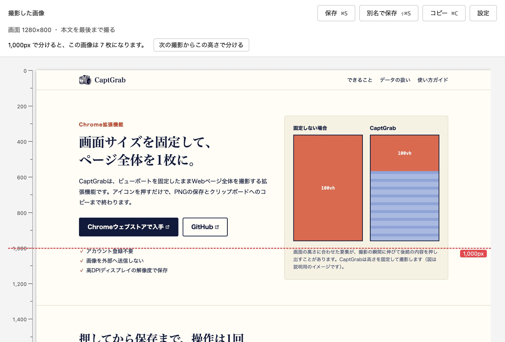
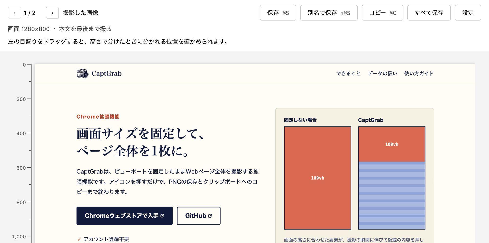
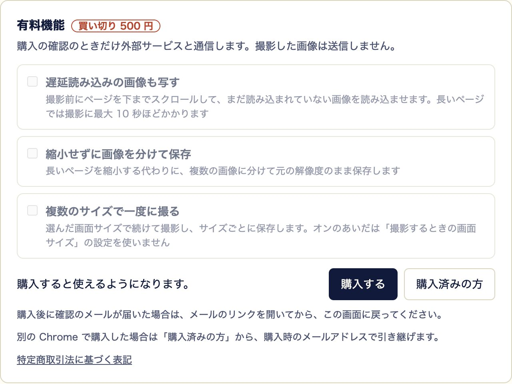

使えるようになる3つの機能
設定画面の「有料機能」の欄で、使うものだけをオンにします。
遅延読み込みの画像も写す
まだ読み込まれていない画像も、撮影前に読み込ませてから写します。
縮小せずに画像を分けて保存
長いページを縮めず、元の解像度のまま複数の画像に分けて保存します。
複数のサイズで一度に撮る
PC、タブレット、スマートフォンなど、選んだサイズで続けて撮影します。
FEATURE 1
遅延読み込みの画像も写す
ニュースサイトやブログ、通販サイトの多くは、画面に入ってから画像を読み込みます。そのまま撮ると、まだスクロールしていない部分の画像が空白で写ります。
オンにすると、撮影前にページを下までスクロールして画像を読み込ませ、元の位置に戻してから撮影します。
- 画像の多いページを、1回で最後まで撮れます
- 下までスクロールすると続きが追加されるページでは、追加された分も写ります
- 長いページでは、撮影に最大10秒ほどかかります
オフのとき
オンのとき
FEATURE 2
縮小せずに画像を分けて保存
無料の機能では、とても長いページは画像の長辺が16,000pxに収まるよう縮小します。この機能をオンにすると、縮小する代わりに複数の画像に分けて、元の解像度のまま保存します。文字が小さくて読めなくなることがありません。
分け方を選べる
- 高さで分ける：1枚の高さの上限を1,000〜16,000pxで指定します
- 枚数で分ける：2〜20枚の、同じ高さの画像に分けます
-
分けた画像は、いつもの連番のあとに何枚目かを付けて、
screen-0001-1.png、screen-0001-2.pngのように保存します
撮った画像を見ながら高さを決める
別タブで開いた画像の左には、保存される画像のピクセル数で目盛りが付きます。目盛りをドラッグすると、その高さで分けたときに分かれる位置に線が引かれ、何枚になるかもわかります。「次の撮影からこの高さで分ける」を押すと、その高さが設定になります。

FEATURE 3
複数のサイズで一度に撮る
選んだ画面サイズで続けて撮影し、サイズごとに保存します。Webサイトの表示確認やレビューで、サイズを変えて何度も撮り直す必要がありません。
選べるサイズ
- 1920 × 1080（フルHD）
- 1440 × 900
- 1280 × 800
- 768 × 1024（タブレット）
- 375 × 667（スマートフォン）
撮った画像は1つのタブで確認
screen-0001-1920x1080.png
のように、サイズを付けた名前で保存します。別タブでは、撮った画像を横に並べて表示し、‹ › ボタンや ← → キーで切り替えられます。画面上部には、その画像を撮ったときの画面サイズを表示します。
分けて保存する機能と組み合わせると、サイズごとに分けて保存します。クリップボードには1枚目だけをコピーします。

購入方法
- CaptGrab の設定画面を開きます。撮影時に出る表示の歯車ボタンか、アイコンを右クリックして「オプション」から開けます。
- 「有料機能」の欄の「購入する」を押します。
- 表示される購入ページで、メールアドレスと支払い方法を入力して支払います。クレジットカードなど、購入ページに表示される方法で支払えます。
- 設定画面に戻ると、有料機能が使えるようになります。確認のメールが届いた場合は、メールのリンクを開いてから戻ってください。
別の Chrome で使うときは、その Chrome の設定画面で「購入済みの方」を押し、購入時のメールアドレスで引き継いでください。

よくある質問
- 月額の料金はかかりますか？
- かかりません。500円を一度支払えば、追加の料金なしで使えます。
- 購入しないと、今までの機能は使えなくなりますか？
- いいえ。ページ全体の撮影、保存、コピー、画面サイズの指定などの無料の機能は、購入しなくてもこれまでどおり使えます。
- パソコンを買い替えたり、別の Chrome で使ったりできますか？
- できます。設定画面の「購入済みの方」から、購入時のメールアドレスで引き継げます。
- 返金やキャンセルはできますか？
- デジタルコンテンツの性質上、購入後の返品とキャンセルはお受けしていません。不具合で有料機能が使えない場合は、captgrab@shiftonton.net までお問い合わせください。詳しくは特定商取引法に基づく表記をご覧ください。
- 購入すると、撮影した画像が送信されますか？
- 送信しません。通信するのは購入を確認するときだけで、撮影した画像やページの内容は送りません。詳しくはプライバシーポリシーをご覧ください。
- スマートフォンでも使えますか？
- 使えません。CaptGrab はパソコン版の Google Chrome 専用です。スマートフォンの表示は、パソコンから「複数のサイズで一度に撮る」や画面サイズの指定で撮影できます。